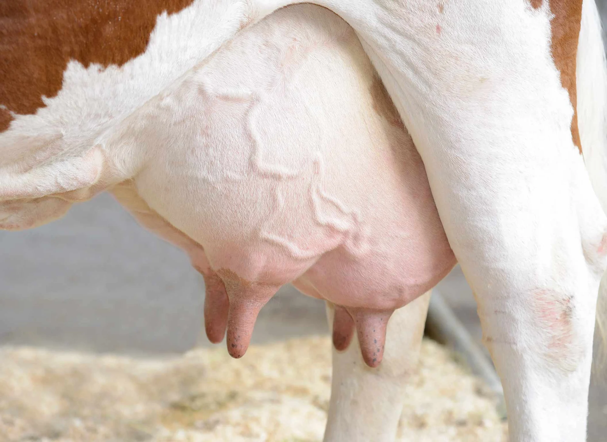
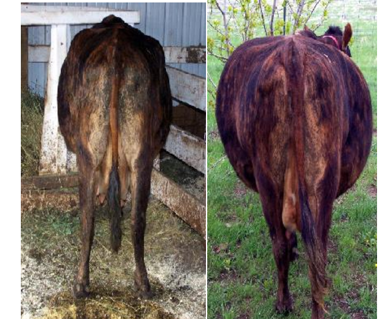
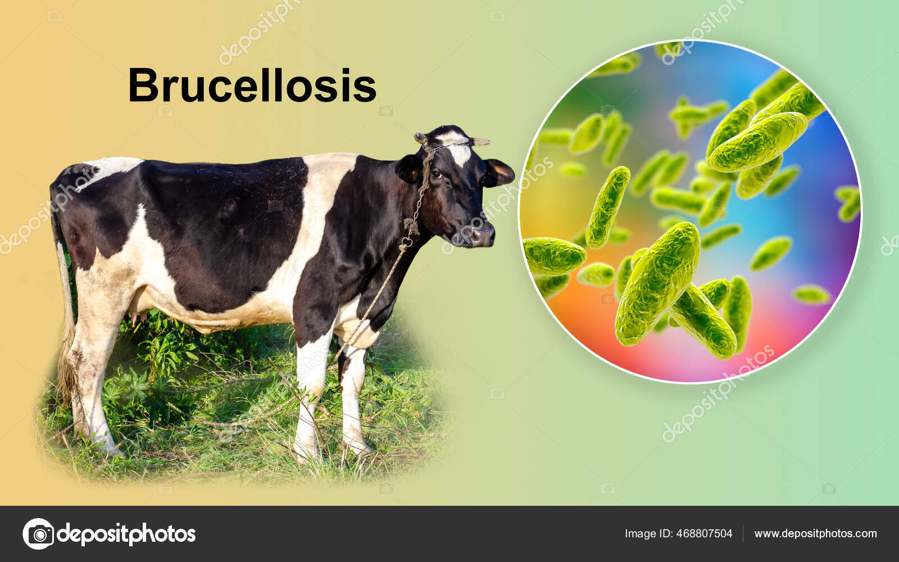
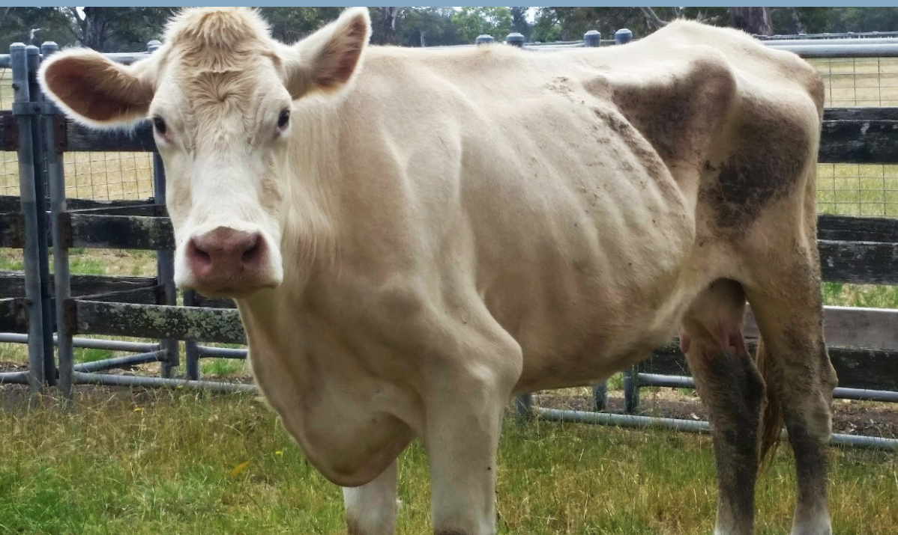
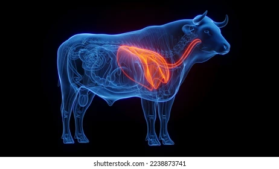

3) Disease & Symptoms Table
Common Cow Diseases with Symptoms and Prevention| Sr No. | Disease Name | Main Symptoms | Causes | Prevention |
|---|---|---|---|---|
| 1 | Foot and Mouth Disease (FMD)

|
|
Viral Infection | Vaccination, isloate infected cows, clean shed |
| 2 | Mastitis  |
|
Bacterial infection | Clean milking, udder hygiene, dry bedding |
| 3 | Milk Fever |
|
Low calcium | Balanced diet, calcium supplements |
| 4 | Bloat  |
|
Gas formation due to feed | Avoid sudden feed change, avoid wet grass |
| 5 | Brucellosis  |
|
Bacterial infection | Vaccination, testing, isloate infected cows |
| 6 | Ringworm |
|
Fungal Infection | Disinfect shed, isloate infected cows |
| 7 | Diarrhea  |
|
Infection or feed problem | Clean water, balanced feeding, hygiene |
| 8 | Pneumonia  |
|
Cold stress, onfection | Warm shelter, vaccination, avoid overcrowding |